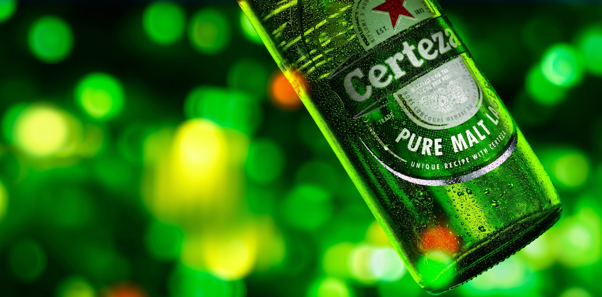
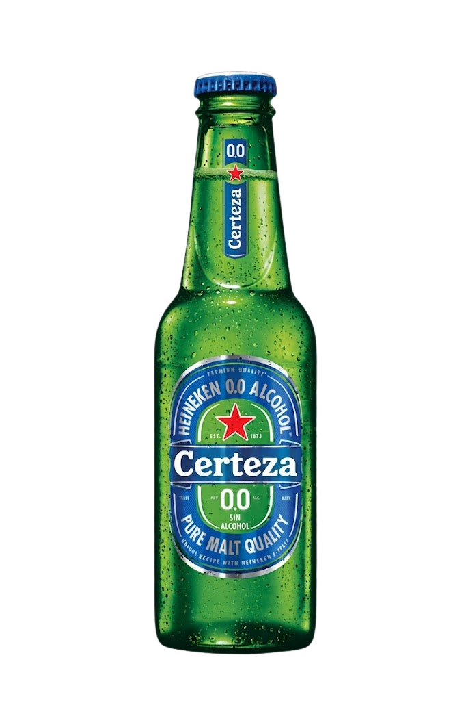

Cero alcohol, 100% Certeza®. Estamos orgullosos de nuestra Certeza® 0.0, al estar elaborada con devoción y con el respaldo de nuestra herencia en el conocimiento de la cerveza.
Producto
El consumo responsable es lo más importante para nosotros. Tenemos dos formas diferentes de defenderlo, en la calle y fuera de ella. En primer lugar, sabemos que los accidentes no sólo pasan en la calle. Por eso motivamos el consumo responsable, estés o no conduciendo. Y en segundo lugar, porque creemos que el mejor conductor es el que nunca bebe antes de conducir.
Aprovechando nuestra rica historia y orgullosa herencia, nuestras campañas cuentan el proceso del desarrollo de nuestra marca. La voz de Certeza® es ingeniosa, inteligente y habla de una forma refrescante. Nuestra visión es positiva y sí, a veces es un poco atrevida. Lo cierto es que cada campaña es 100% Certeza®. ¡Disfrútala!